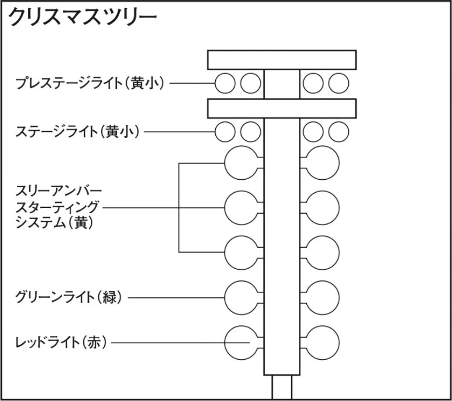
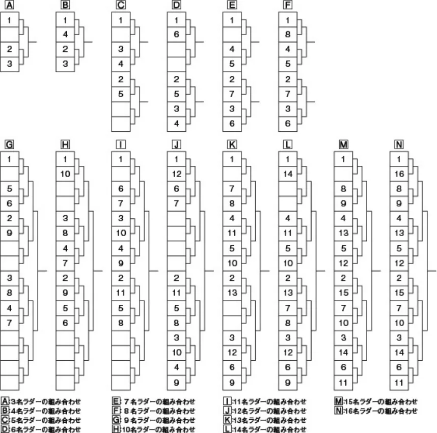

スピード競技開催規定細則ドラッグレース競技開催要項
JAF の公式サイトではありません。JAF が公開する PDF を自動変換した非公式の検索用アーカイブです。記載内容は必ず JAF の原本 PDF で出典をご確認ください。 検索と AI 質問つきのビューアで開く
P.1スピード競技開催規定細則：ドラッグレース競技開催要項
２００１年１０月１９日制 定２００２年 １月 １日施 行２００２年 ７月３１日改 定
２００３年 １月 １日施 行２００４年 ８月 ３日改 定２００５年 １月 １日施 行
２０１７年 ６月 １日改 定２０１７年 ７月 １日施 行２０25年 4月 １日改定施行
一般社団法人日本自動車連盟（以下「ＪＡＦ」という。）は、スピード競技開催規定に従い、国内格式以下のＪＡＦ公認のドラッグレース競技会（以下「本競技」という。）の開催要項を以下の通り定める。なお、国際競技については、ＦＩＡ国際モータースポーツ競技規則付則ドラッグレース競技規則が適用される。
１．定 義：
参加車両が２台ずつ（例外的に１台で）平坦な舗装路面の直線のコースで、停止状態から発進して１／４マイル（402.336ｍ）または１／８マイル（201.168ｍ）の距離（以下「競技距離」という。）を走行するために要する時間または競技距離の終点（ゴール）における通過速度を争う競技をドラッグレースという。
ただし、ＪＡＦが認めた場合は、競技距離を１／４マイル（402.336ｍ）以下にすることができるが、１／８マイル（201.168ｍ）以下にすることはできない。
２．開催場所：
ＪＡＦが公認するドラッグレースコース（以下「公認コース」という。）とする。
３．参加車両：
１）本競技に参加できる車両は、ＦＩＡ国際モータースポーツ競技規則付則ドラッグレース競技規則による下記
（１）〜（６）の車両およびＪＡＦ国内競技車両規則による下記（７）〜（９）の車両に区分する。
（１）トップフューエルドラッグスター（TF）
（２）トップアルコールドラッグスター（TAD）
（３）トップガスドラッグスター（TGD）
（４）ファニーカー（FC）
（５）トップメタノールファニーカー・トップアルコールファニーカー（TA/FC）
（６）プロストック（PS）
（７）スピードD車両（D）
（８）スピードSA車両（SA）
（９）登録番号標付車両（P.N.B）
２）クローズド競技は、参加車両がスピードSA車両（SA）または登録番号標付車両（P.N.B）による場合にのみ認められる。
３）競技会特別規則に規定することにより参加車両の区分を細分化することができる。
４．コース公認申請者の同意：
オーガナイザーは、ＪＡＦにカレンダーを登録申請する時に、公認コースのコース許可証取得者の同意を必要とする（カレンダー登録申請書のレース開催日に関する同意欄を使用すること）。
５．組織許可の条件の通知：
オーガナイザーは、競技に先立ちＪＡＦによる組織許可の条件を競技会審査委員会に通知すること。
６．参加資格：
有効な国内Ｂライセンス以上の所持者とする。
ただし、以下の車両（TF、TAD、FC、TA/FC、PS）を使用する場合は、ＪＡＦスポーツ資格登録規定第４条
７．により、国内格式以下の競技会においても、車両毎に定める次のライセンスが必要とされる。
| 車 両 | TF | TAD | FC | TA／FC | PS |
| ライセンス | 国際ドラッグA，1 | 国内A以上 | 国際ドラッグB，1 | 国内A以上 | 国内A以上 |
７．車両検査：
１）競技会技術委員長は競技に先立ち車両検査を実施すること。
P.2２）参加者は出走可能な状態で車両検査を受けること。
３）次のいずれかに該当する場合は、当該競技会に参加することはできない。
（１）車両検査で不合格の場合
（２）車両検査を受けない場合
（３）競技会技術委員長の修正指示に従わない場合
８．競技とスタート方法：
１）競技はトーナメント（ラダー）方式またはヒート制（タイムトライアル）とする。
２）すべての車両は自力でスタート位置に着くこと。
９．安全の確保：
１）競技中は、競技役員および当該ヒートのスタート進行に入った車両のピットクルーならびにメカニックを除き、いかなる者もトラック上に立ち入ってはならない。
２）オーガナイザーは、競技会場の形状等に応じて適切なコース設定を行い、特に観衆に対する安全に十分留意すること。
10．スタート合図：
旗による信号をスタート合図に使用する場合は、「スピード競技における旗信号に関する指導要項」に従うこと。
上記以外の信号（クリスマスツリー等の信号灯を含む）を使用する場合は、競技会特別規則にその旨を明記すること。
11．バーンアウト：
車両がスタートラインから発進する前に、タイヤと路面の摩擦係数を高めるため、タイヤに水を散布しタイヤを空転させることによりタイヤの温度を上げ内圧を上げる行為（以下「バーンアウト」という。）を行う場合は、以下に従うこと。
１）オーガナイザーは、バーンアウトを行うことのできるエリアを競技会特別規則に明記し、バーンアウトエリアには本開催要項９．の１）に規定された者以外の立ち入りを禁止すること。
２）バーンアウトはバーンアウトエリアにおいてのみ行うことができる。また、バーンアウト中はいかなる者も車に触れたり掴まったりしてはならない。
３）バーンアウトの際、走路上で競技車両を方向転換（旋回）することは認められない。バーンアウト中の危険と見なされる行為も認められない。
４）バーンアウトの際に使用できるのは水のみとし、ファイヤーバーンアウト（裸火や火炎の使用）は厳禁とする。
５）スピードSA車両（SA）および登録番号標付車両（P.N.B）は、スタートラインを越えてバーンアウトを行うことが認められない。
12．ステージング：
スタート待機状態からスタートラインを発進するまでのスタート準備行為（以下「ステージング」という。）を旗信号によって行う場合は競技会特別規則にその旨を明記すること。
信号灯によるステージングを行う場合は以下に従うこと。
１）オーガナイザーは、ステージングエリアを競技会特別規則に明記し、当該エリアには本開催要項９．の１）に規定された者以外の立ち入りを禁止すること。
２）トップフューエルドラッグスター（TF）、トップアルコールドラッグスター（TAD）、トップガスドラッグスター（TGD）、ファニーカー（FC）、トップメタノールファニーカー・トップアルコールファニーカー（TA／FC）クラスの車両は一度スタートしてバーンアウトエリアに入った後は、エンジンを再度始動させてはならない。
３）ドライバーおよびピットクルーならびにメカニックは、車両が発進のためにバーンアウトエリアに移動した後に、エンジンの始動と出走準備に着手すること。
４）すべての車両は、いかなる場合でもステージングを行った後にスタートすること。
５）ステージングは、その車両のエンジンの力だけで行うこと。車両をプッシュしてスタートさせたりステージングさせることは認められない。
６）ドライバーが車両とスタートラインとの位置関係を確認する場合は、コース上の装置でのみ確認すること。
７）対戦する２台の車両のドライバーは、双方同時にプレステージライトを点灯することが望ましい。両者ともステージライトを点灯する前にプレステージライトを点灯することとし、相手側のプレステージライトが点灯
P.3するまではステージライトを点灯しないこと。
８）スタート審判員は、ドライバーがステージングする際に十分な時間が確保されるよう、その制限時間を決定する。スタート審判員の指示を受けたにも拘わらず、ステージングを行わない場合は、当該ヒートが無効になることがある。正しいステージングを行い、スタート審判員の発進の合図が出た後のステージングのやり直しは認められない。 スタート装置が作動する前にスタートラインから出たドライバーは、シングル走行のドライバーも含めて、当該ヒートを無効とする。
−信号灯（クリスマスツリー）の例図−

13．公式予選
１）公式予選を行う場合は、以下に従うこと。
（１）全てのドライバーは公式予選に参加しなければならない。
（２）公式予選では区間タイムが早い者が上位となる。
（３）公式予選の区間タイムが同一の場合は、その公式予選計測区間で記録された最高速度の速い者を上位とする。
（４）競技会審査委員会は、参加者の申請に基づき、不可抗力（例えば、公式予選中に計時装置にエラーが発生した場合、反対レーンを走る別のドライバーが車両をコントロールできなくなったことを起因として自車の走行を放棄せざるを得なくなった場合、悪天候により１名あるいは複数のドライバーが公式予選で走行をできない場合）により、１名あるいは複数のドライバーが公式予選で走行できない場合、当該ドライバーを公式予選通過者リストの最下位に入れることを認めることができる。
２）公式予選を行わない場合は、トーナメント（ラダー）の決定方法およびレーン選択権を特別規則に明記すること。
14．トーナメント（ラダー）：
１）公式予選結果により上位16位までの車両が成績順に１番から16番までの枠に入ってトーナメントに出場することができる。
２）16台の車両が出場する場合の同一車両区分の対戦相手は、１番対16番、２番対15番、３番対14番、４番対13番、５番対12番、６番対11番、７番対10番、８番対９番の組み合わせとする。
３）決定された対戦相手は、競技会審査委員会が正当な変更理由を認めない限り変更されない。
４）16台分の枠に空き枠があり、枠が完全に埋まらない場合には、以下に示すトーナメント（ラダー）の組み合わ
P.4せ例に基づき実施する。
−トーナメント（ラダー）の図−

15．シングル走行：
トーナメント（ラダー）へ進出したドライバーの数が奇数の場合、または対戦枠が決定した相手が出走できない場合は、次の要領による１台出走のシングル走行とする。
シングル走行のドライバーがステージングしてスタートの合図を受けた時点、あるいはスタート審判員がそのドライバーを勝者と宣言した時点で勝者とみなされる。ただし、ドライバーがシングル走行中にコースアウトやセンターラインオーバーした場合、当該ヒートは無効とする。
16．公式予選繰り上げ出場者について：
本開催要項14.１）でトーナメント（ラダー）が組まれた後は、決められた２台１組の組み合わせは変更できない。
ただし、公式予選通過車両またはドライバーが１回戦に出場できない場合は、トーナメント（ラダー）の組み合わせが決定される前であることを条件に、競技会審査委員会の裁定により公式予選繰り上げ出場者を最後尾者の枠に入れることとする。繰り上げ出場の方法は公式予選を通過していない者の中で区間タイムが最も早かったドライバーが最初の枠に入り、次に早かったドライバーが２つ目の枠に入るという順序で進められる。
17．トーナメント（ラダー）におけるレーンの選択権：
１）１回戦：公式予選の上位ドライバーに走行レーンの選択権が与えられる。
２回戦：１回戦で区間タイムが早かったドライバーに走行レーンの選択権が与えられる。
３回戦：２回戦で区間タイムが早かったドライバーに走行レーンの選択権が与えられる。
以下、上記に準じて走行レーンの選択権が与えられる。
なお、対戦相手同士の区間タイムが同一の場合は、当該計測区間で記録された最高速度の速いドライバーにレーンの選択権が与えられる。
２）ヒート制（公式予選を含む）の場合のレーン選択権は、公式通知により指示される。
P.518．ペナルティ
１）対戦相手同士がファウルスタートの場合は、先にファウルスタートをした者について当該ヒートを無効とする。（信号灯によるスタートでファウルをした場合は、グリーンライトが点灯する前に発進した車両の反応時間により判定する）
２）ドライバーの一方がファウルスタートし、もう一方のドライバーが走路の境界線を越えた場合には、後者の違反をより重大なものと見なし、当該ヒートを無効とする。
また、前者のファウルしたドライバーは競技会審査委員会の裁定により競技に復帰できる場合がある。
３）対戦相手双方のドライバーがコースアウトやセンターラインを越えた場合や、スタート装置が作動する前に双方のドライバーがスタートラインを越えた場合等２台の競技車両がともに違反した場合、違反した双方のドライバーについて当該ヒートを無効とする。
４）走路の境界線を越えた違反に関する判定に際して、車両の一部でもラインの塗装面を完全に越えている場合は当該ヒートを無効とする。
５）対戦相手双方の競技車両がセンターラインまたは外側のラインを越えた場合には、双方のドライバーについて当該ヒートを無効とする。
６）競技中に走行ラインを越える違反をしたドライバーについては、当該ヒートを無効とする。
７）急制動により車両を制御できずにガードレールや照明装置に接触したり、中央の境界線を越えた（ゴールラインの通過を含む）と判定された場合には、そのドライバーについて当該ヒートを無効とする。
８）ガードレール、防護柵、あるいはトラックに固定されている物体（ゴム製のコーンおよび補助用具を含む）に接触した場合、そのドライバーについて当該ヒートを無効とする。
９）信号灯によるスタート合図で、ステージラインを越え、ステージライトを消灯させてしまう行為は、そのドライバーについて当該ヒートを無効とする。
10）信号灯によるスタート合図で、プレステージライトを点灯させるのが著しく遅い場合や、相手がステージライトを既に点灯させている状態でステージライトを点灯させるのが著しく遅い場合は、そのドライバーについて判定により当該ヒートを無効とする。
11）バーンアウト中あるいはバーンアウトエリアを出た後にエンジン停止（セルフスタートによるエンジン再始動を除く）または故障した車両は当該ヒートを無効とする。
12）競技コースから離れるため、あるいはトラックに残っている破片を避けるため等危険回避のために境界線を越えた場合は、当該ヒート無効とはならない。
13）スポーツマンらしからぬ行為、不謹慎な言葉遣い、あるいはレースを妨害する行為をした場合は、失格とする。
14）危険、不公平、あるいは秩序を乱すとみなされる行為をした場合は、失格とする。競技において、実際に競技が始まる前に何らかの理由でドライバーが失格となった場合、このドライバーは競技に復帰することができない。
19．順位の決定：
順位は次の優先順位により決定される。
１）トーナメント（ラダー）方式
（１）ゴールに先着した者。
（２）区間タイムが早かった者。
（３）ゴール時の通過速度が速かった者。
（４）競技会審査委員会の決定。
２）ヒート制（タイムトライアル）
（１）区間タイムが早かった者。
（２）ゴール時の通過速度が速かった者。
（３）競技会審査委員会の決定。
20．参加者およびドライバーの遵守事項：
１）すべてのドライバーは、ＦＩＡ国際モータースポーツ競技規則付則L項第３章に定める耐火炎レーシングスーツ、グローブ、ソックス、シューズ等を着用すること。なお、スピードSA車両（SA）および登録番号標付車両（P.N.B）により参加するドライバーについては、これを推奨する。
２）ヘルメットは国内競技車両規則・細則「スピード競技用ヘルメットに関する指導要綱」に記載されたものを着用すること。
３）トラック内に立ち入るピットクルー、メカニックは、作業着など競技会関係者として適切な着衣が要求され、
P.6靴も履くこと。
４）薬物等によって精神状態を繕ったり、飲酒してはならない。
５）トーイングカーとして使用する車両には、ドライバーの競技ナンバーを見え易い形で取付けること。プッシュカーやトーイングカーのクルーメンバーの数はドライバーを含み６名に制限される。クルーメンバーが競技場内でプッシュカーやトーイングカーに乗車する時は車内あるいは荷台に座ることが危険でない場合に限る。テイルゲートに坐ったり、ランニングボードに立ったり、あるいは車内に体の一部だけが入っている状態で乗車しないこと。
21．施 行：
2025年４月１日